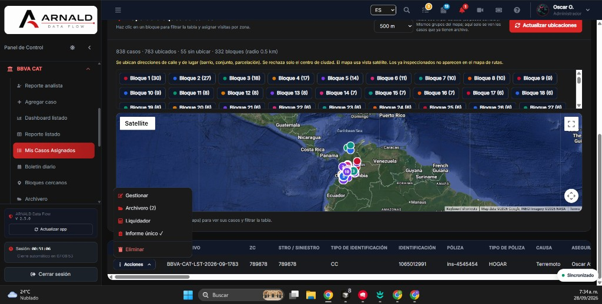
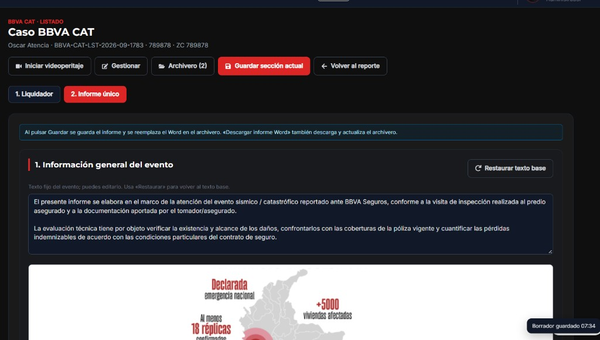
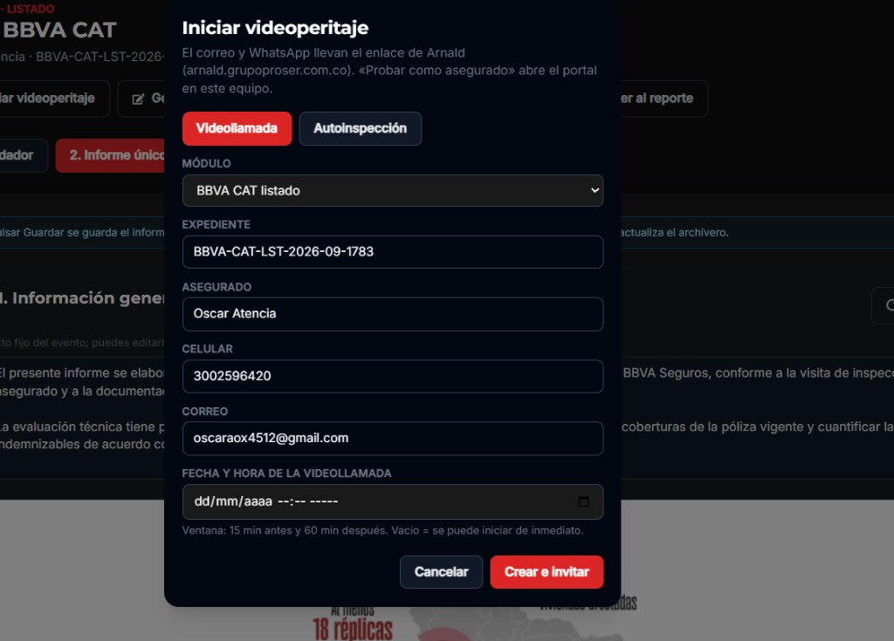
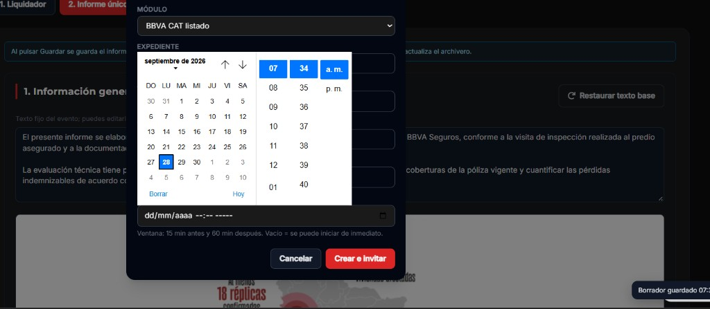
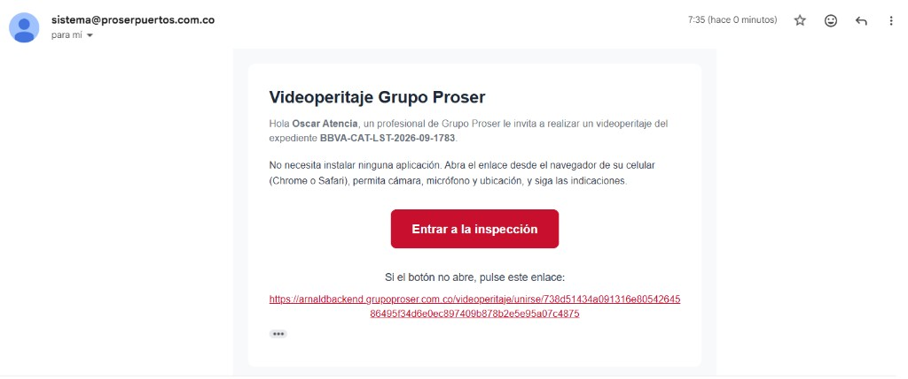
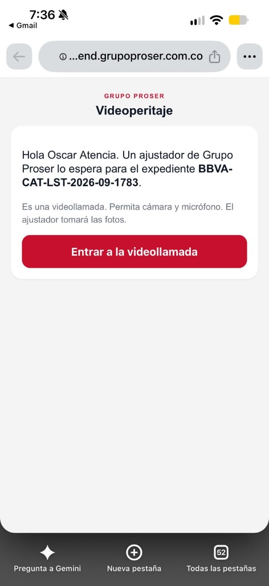
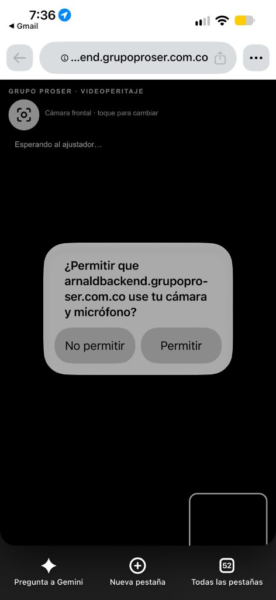
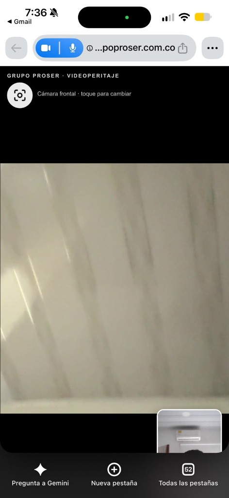
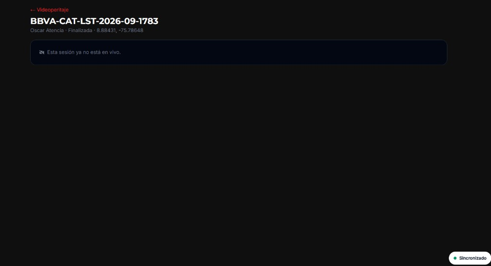
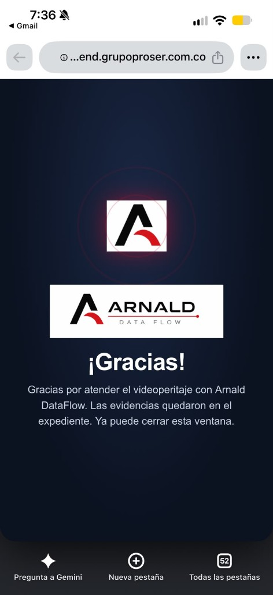

1. Abrir el caso asignado
- Inicie sesión en ARNALD Data Flow.
- En el menú, abra el módulo (ejemplo: BBVA CAT).
- Entre a Mis Casos Asignados (o el listado equivalente).
- Localice el expediente y en Acciones elija Gestionar.

2. Entrar al caso e iniciar videoperitaje
- Dentro del caso verá pestañas como Liquidador e Informe único.
- En la barra superior pulse el botón rojo Iniciar videoperitaje (icono de cámara).

3. Completar el formulario de invitación
- Elija el tipo: Videollamada (en vivo) o Autoinspección.
- Verifique Módulo, Expediente, Asegurado, Celular y Correo (se rellenan desde el caso).
- Corrija celular o correo si hace falta antes de enviar.

Los enlaces de correo y WhatsApp apuntan al portal de Arnald
(arnaldbackend.grupoproser.com.co). «Probar como asegurado» abre el portal en este mismo equipo.
4. Programar fecha y hora (opcional)
- Si la llamada es inmediata, deje la fecha vacía.
- Si es programada, seleccione día y hora en el calendario.

Vacío = se puede iniciar de inmediato. Si programa hora, el asegurado solo podrá entrar en esa ventana.
5. Crear e invitar
- Pulse Crear e invitar (botón rojo).
- Use Cancelar si no desea crear la sesión.
- Al confirmar, el sistema envía correo y/o WhatsApp y deja lista la sala.
6. Correo que recibe el asegurado
- El asegurado recibe un correo de Videoperitaje Grupo Proser.
- Debe pulsar Entrar a la inspección o abrir el enlace de respaldo.
- Importante: abrir en Chrome o Safari del celular (no dentro de Gmail/WhatsApp si es posible).

Si abre el enlace solo dentro de WhatsApp o Gmail, la cámara puede fallar o quedarse en «Cargando…». En el menú ⋮ elija Abrir en Chrome / Safari.
7. Pantalla de bienvenida
- Verá el saludo con su nombre y el número de expediente.
- Pulse Entrar a la videollamada.

8. Permitir cámara y micrófono
- El navegador pedirá permiso para cámara y micrófono.
- Pulse Permitir.
- Si elige «No permitir», la videollamada no podrá continuar.

9. Durante la videollamada (celular)
- La pantalla grande muestra su cámara (vista previa).
- Puede tocar el icono para cambiar entre cámara frontal y trasera.
- El ajustador toma las fotos desde su lado; el asegurado solo mantiene la cámara estable.

Para fachadas o daños use la cámara trasera. La frontal es para identificarse; si se ve muy cerca, aléjese un poco del teléfono.
10. Controles en la sala (plataforma)
Cuando el asegurado está conectado, en la sala del ajustador podrá:
- Capturar foto — toma evidencia desde la cámara del asegurado.
- Grabar llamada — inicia/detiene la grabación de la sesión.
- Apagar cámara — silencia su propia cámara (la del ajustador).
11. Finalizar y adjuntar al caso
- Si el asegurado no entró, puede Reenviar enlace.
- Al terminar, pulse Finalizar y adjuntar al caso.
- Las fotos/videos quedan vinculados al expediente (archivero / informe).
12. Sesión finalizada
Tras finalizar verá el estado Finalizada y el mensaje «Esta sesión ya no está en vivo». Las coordenadas GPS del asegurado pueden aparecer en el encabezado.


13. Pantalla de gracias
Al colgar o finalizar, el asegurado ve la pantalla ¡Gracias! y puede cerrar la ventana. Las evidencias quedan en el expediente.

Consejos y solución de problemas
- Queda en «Cargando…»: abrir el enlace en Chrome/Safari (fuera de WhatsApp/Gmail) y permitir cámara/micrófono.
- Cara muy grande / zoom: pedir al asegurado alejarse o cambiar a cámara trasera; preferir luz frontal.
- No llega el correo: revisar spam; usar Reenviar enlace o WhatsApp.
- Fuera de ventana horaria: si programó fecha/hora, solo se puede entrar 15 min antes y 60 min después.
- Probar usted mismo: en el modal use «Probar como asegurado» o abra el enlace público en el celular.
Para imprimir o compartir: abra este archivo index.html en el navegador
(Archivo → Imprimir → Guardar como PDF). Las imágenes se incluyen en el PDF.